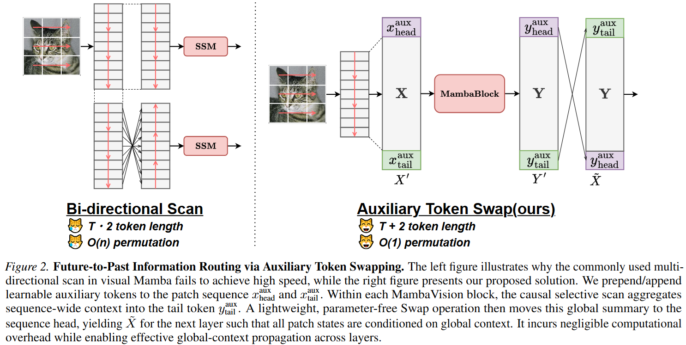
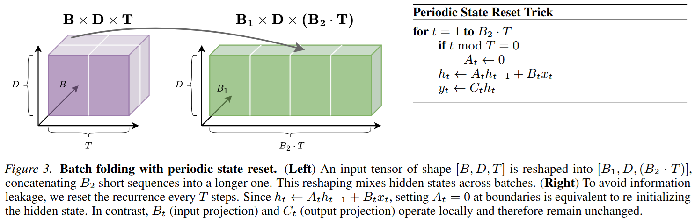
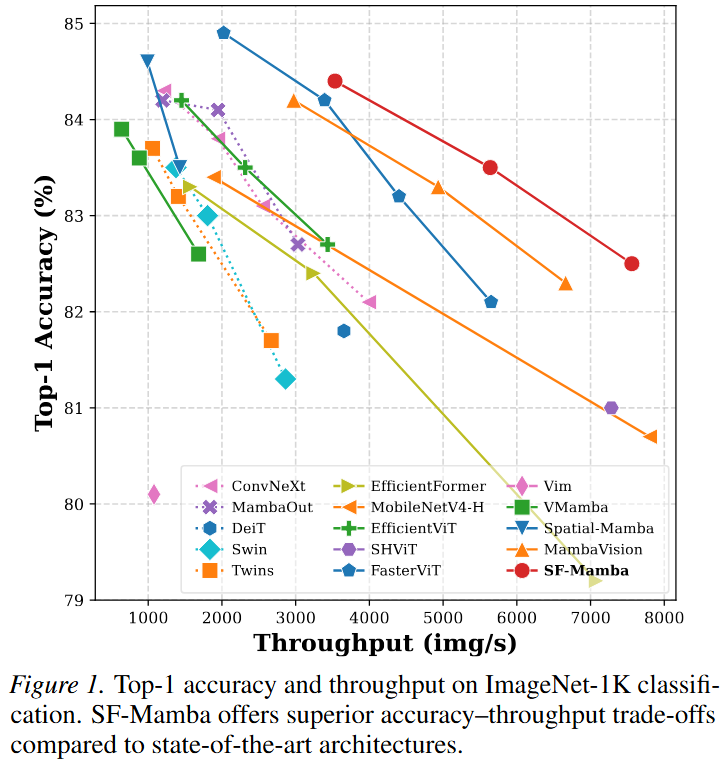
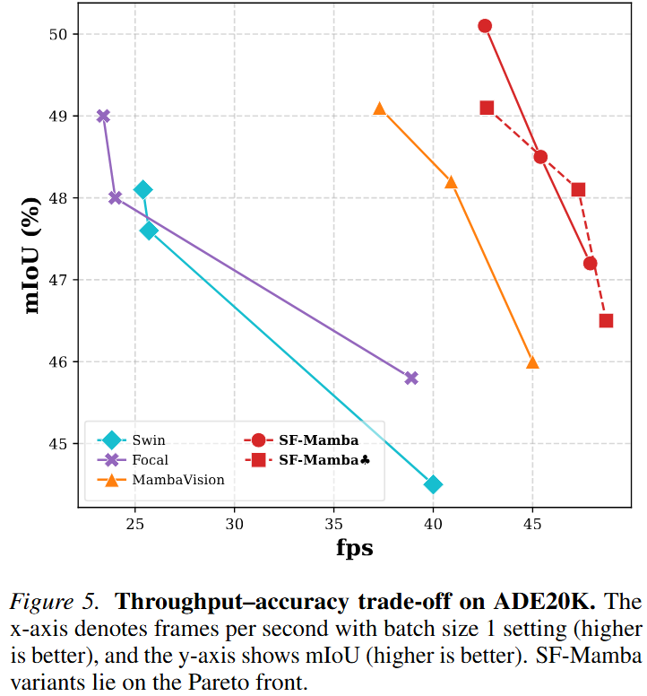
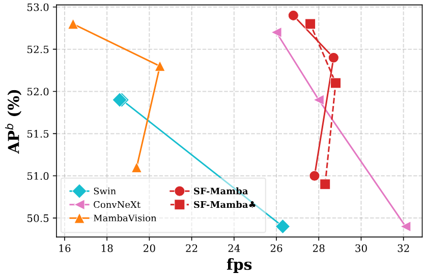

The realm of Mamba for vision has been advanced in recent years to strike for the alternatives of Vision Transformers (ViTs) that suffer from the quadratic complexity. While the recurrent scanning mechanism of Mamba offers computational efficiency, it inherently limits non-causal interactions between image patches. Prior works have attempted to address this limitation through various multi-scan strategies; however, these approaches suffer from inefficiencies due to suboptimal scan designs and frequent data rearrangement. Moreover, Mamba exhibits relatively slow computational speed under short token lengths, commonly used in visual tasks. In pursuit of a truly efficient vision encoder, we rethink the scan operation for vision and the computational efficiency of Mamba. To this end, we propose SF-Mamba, a novel visual Mamba with two key proposals: auxiliary patch swapping for encoding bidirectional information flow under an unidirectional scan and batch folding with periodic state reset for advanced GPU parallelism. Extensive experiments on image classification, object detection, and instance and semantic segmentation consistently demonstrate that our proposed SF-Mamba significantly outperforms state-of-the-art baselines while improving throughput across different model sizes. We will release the source code after publication.
Mamba-based vision models tend to be slow, especially when the input is low-resolution. We want to make them really efficient for both low-resolution and high-resolution inputs.
While multi-directional scanning alleviates the causal limitation of Mamba and improves performance, we find that it incurs a significant overhead due to token re-ordering operations, which is not reflected in FLOPs. To address this issue, we propose auxiliary token swapping, a mechanism that enables bidirectional information propagation even under a single-directional scan, eliminating the need for costly token re-ordering.

Mamba becomes inefficient for short token lengths because modern GPUs typically operate with 32 or 64 threads per warp, while the parallel scan in Mamba cannot fully utilize these threads when the sequence length is small. To address this issue, we propose batch folding with periodic state reset, which reshapes the batch dimension into the sequence dimension to virtually increase the token length, while maintaining computational consistency with the original formulation.

Results on image classification, semantic segmentation, and object detection tasks.



@article{yoshimura2026sfmamba,
title={SF-Mamba: Rethinking State Space Model for Vision},
author={Yoshimura, Masakazu and Hayashi, Teruaki and Hoshino, Yuki and Wang, Wei-Yao and Ohashi, Takeshi},
journal={arXiv preprint arXiv:2603.16423},
year={2026}
}